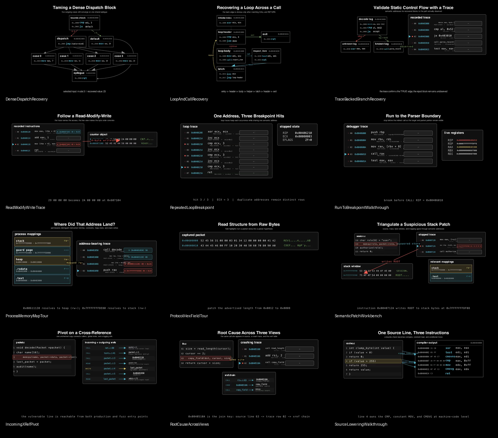
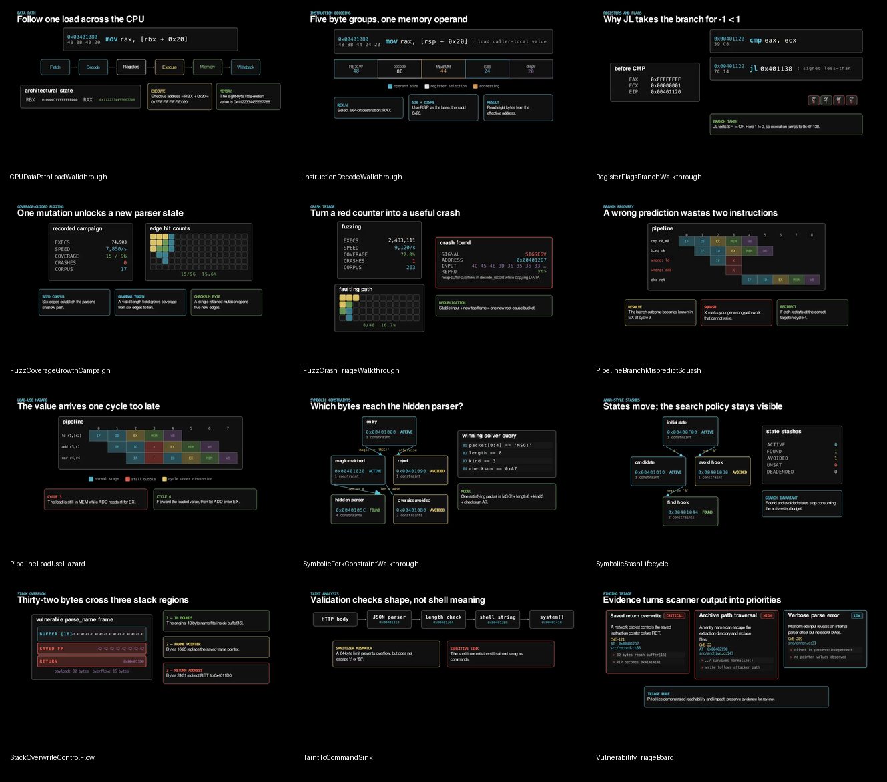
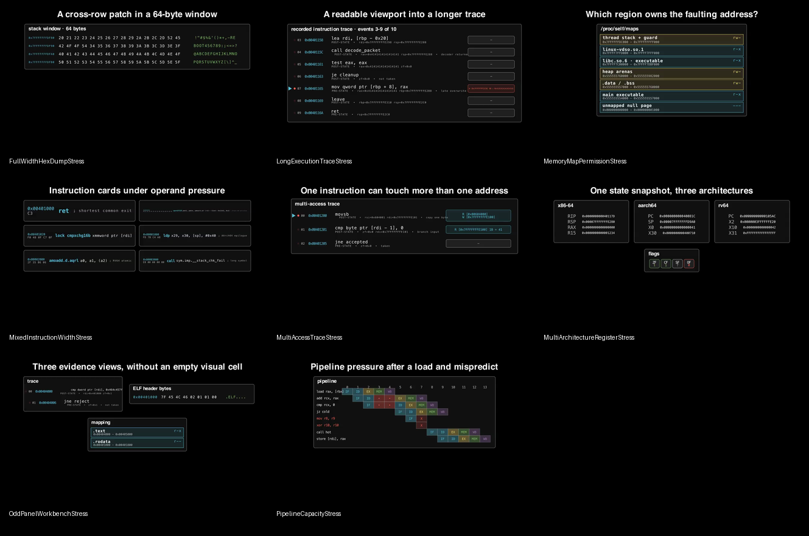

39 scenes · four collections
Start with a story.
Then make it yours.
Every example is a focused talk beat with a stated teaching intent—not a kitchen-sink feature demo. Browse the reviewed endpoints below, watch six representative animations, then open the source for the exact composition.
Playable examples
See the narrative unfold.
Use the native controls to scrub each scene. Videos are muted and never autoplay.
Reviewed gallery
Every scene, sampled and inspected.
Each contact sheet shows the final frame. Open a timeline to compare the early, middle, and final state of every scene in that collection.

Analysis & debugging
Recover decisions, follow execution, resolve addresses, and connect source to machine behavior.
- Loop, call, jump-table, and trace-backed CFG recovery
- Breakpoints, repeated hits, and read-modify-write traces
- Protocol bytes, process mappings, and semantic patch views
- Source lowering, incoming xrefs, and root-cause triangulation


Integrated showcases
See components compose into complete presentation beats before choosing the smallest pieces for your own scene.
- Reverse-engineering, pipeline, fuzzing, symbolic, and vulnerability tours
- Breakpoint-to-memory and source-to-xref walkthroughs
- Semantic linking across independently laid-out views

CPU & security
Move from bytes and microarchitecture to testing strategy, symbolic reasoning, and vulnerability impact.
- Instruction decode, branch flags, CPU data paths, and pipeline hazards
- Coverage campaigns, crash triage, and corpus decisions
- Symbolic forks, constraints, solver states, and stashes
- Stack corruption, taint-to-sink flow, and finding triage


Layout stress
Regression scenes deliberately pressure labels, rows, mappings, traces, workbench grids, and pipeline capacity.
- x86-64, AArch64, and RV64 register sets
- Cross-row writes and long process-map labels
- Trace viewports, multi-access instructions, and odd pane counts
- Eight overlapping pipeline instructions with stalls and squashes

Reproduce the corpus
Run one scene—or all 39.
The repository includes a parallel renderer and a visual-QA harness. The renderer isolates Manim caches and records failures and timeouts; the QA pass samples three frames from every scene and creates these same sheets.
Quality checks are review prompts, not substitutes for technical and editorial judgment.
# Discover the complete inventory
uv run python scripts/render_examples.py --list
# Render in isolated workers
uv run python scripts/render_examples.py --jobs 2
# Sample and review frames
uv run python scripts/qa_examples.pyYour evidence, your pacing
Use these as starting points.
Replace the sample addresses, code, and findings with the real material from your talk.